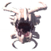
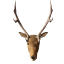
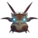
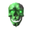
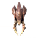

Trofeeën
Trofeeën in Valheim – 67 voorwerpen met bioom, vindplaats, benodigd gereedschap, recept en gebruik.
Geen voorwerp gevonden.
 Abomination Trophy
Abomination Trophy
A tangled mess of roots and bark.
Zo kom je eraan
- Buit van: Abomination · Moeras · 50 % kans
Gebruik
- Ingrediënt voor: Sticky Fishing Bait
 Asksvin Trophy
Asksvin Trophy
Don't let yourself be fooled by the friendly smile, for it could easily bite your arm off.
Zo kom je eraan
- Buit van: Asksvin · Ashlands · 10 % kans
Gebruik
- Bouwmateriaal voor: Feathery Wreath
 Barka Trophy
Barka Trophy
The frozen head of a once-living tree.
Zo kom je eraan
- Buit van: Barka · Diepe noorden · 10 % kans
 Bear Trophy
Bear Trophy
That stare is still frightening...
Zo kom je eraan
- Buit van: Bear · Zwarte bos · 10 % kans
Gebruik
- Ingrediënt voor: Bronze Pendant, Headdress of the Bear
- Bouwmateriaal voor: Bearskin Rug
 Bloedzuigertrofee
Bloedzuigertrofee
Slijmerig, ja, maar achterop de huid staat een mooi rood-zwart patroon.
Zo kom je eraan
- Buit van: Leech · Moeras · 10 % kans
Gebruik
- Ingrediënt voor: Iron Brooch

Bonemaw TrophyA skull made up of dense bone, as dangerous as it is protective.
Zo kom je eraan
- Buit van: Bonemaw · Ashlands · 33 % kans
 Bottenmassatrofee
Bottenmassatrofee
Beenderen en kleverige drab die bijeen wordt gehouden door een ongeziene kracht. Bied het aan als offer bij de Offerstenen.
Zo kom je eraan
- Buit van: Bottenmassa · Moeras
 Brenna Trophy
Brenna Trophy
Still burning, somehow.
Zo kom je eraan
- Buit van: Brenna · Zwarte bos
 Cultist Trophy
Cultist Trophy
My, what big teeth it has...
Zo kom je eraan
- Buit van: Cultist · Berg · 10 % kans
Gebruik
- Ingrediënt voor: Fenris Hood
 De Oudere-trofee
De Oudere-trofee
Dit afgehakte hoofd straalt kracht uit. Bied het aan als offer bij de Offerstenen.
Zo kom je eraan
- Buit van: De Oudere · Zwarte bos
 Doodsmugtrofee
Doodsmugtrofee
Al is dit ding dood, toch raak je het liever niet aan.
Zo kom je eraan
- Buit van: Doodsmug · Vlakten · 5 % kans
 Draugenelitetrofee
Draugenelitetrofee
De dode, roodgloeiende ogen staren je aan, en je botten trillen.
Zo kom je eraan
- Buit van: Elite Draugr · Weiden, Moeras · 10 % kans
- Kapotslaan: Dorp van het noorden · 5,3 % kans
Gebruik
- Ingrediënt voor: IJzeren moker
 Draugentrofee
Draugentrofee
Bind de mond dicht als die 's nachts begint te fluisteren…
Zo kom je eraan
- Buit van: Draugr · Weiden, Moeras · 10 % kans
 Dvergr Trophy
Dvergr Trophy
It's frankly a little troubling that you would consider hanging these on your wall...
Zo kom je eraan
- Buit van: Dvergr Mage · Mistlanden · 5 % kans
- Buit van: Dvergr Rogue · Mistlanden, Ashlands · 5 % kans
- Buit van: Imprisoned Dvergr · Diepe noorden · 5 % kans
 Eikthyrtrofee
Eikthyrtrofee
Dit afgehakte hoofd straalt kracht uit. Bied het aan als offer bij de Offerstenen.
Zo kom je eraan
- Buit van: Eikthyr · Weiden
 Elaking Trophy
Elaking Trophy
Mean little eyes stare back at you.
Zo kom je eraan
- Buit van: Elaking · Weiden, Zwarte bos, Moeras, Berg, Vlakten, Mistlanden, Ashlands, Diepe noorden, Oceaan · 10 % kans
 Eyeless One Trophy
Eyeless One Trophy
Getting slashed by these claws would be very unpleasant.
Zo kom je eraan
- Buit van: Eyeless One · Diepe noorden · 10 % kans
 Fader Trophy
Fader Trophy
The green dragon, corrupted beyond redemption. Offer him to the sacrificial stones.
Zo kom je eraan
- Buit van: Fader · Ashlands
 Fallen Valkyrie Trophy
Fallen Valkyrie Trophy
Though she is dead, she yearns for the blood to flow.
Zo kom je eraan
- Buit van: Fallen Valkyrie · Ashlands · 5 % kans
Gebruik
- Ingrediënt voor: Jörmundling
 Fenringtrofee
Fenringtrofee
Half wolf en half mens, een gezicht dat is vastgezet in een grauw van pijn.
Zo kom je eraan
- Buit van: Fenring · Berg · 10 % kans
Gebruik
- Ingrediënt voor: Cold Fishing Bait, Wolf Sight
 Geirrhafa Trophy
Geirrhafa Trophy
He's giving you an icy stare.
Zo kom je eraan
- Buit van: Geirrhafa · Berg
 Gezweltrofee
Gezweltrofee
Een kleverige zwarte bende.
Zo kom je eraan
- Buit van: Gezwel · Vlakten · 10 % kans
Gebruik
- Ingrediënt voor: Blob Bomb: Tar
 Ghost Trophy
Ghost Trophy
Does it still whisper about unfinished business?
Zo kom je eraan
- Buit van: Spook · Zwarte bos · 10 % kans
 Gjall Trophy
Gjall Trophy
Hopefully it won't float away.
Zo kom je eraan
- Buit van: Gjall · Mistlanden · 30 % kans
Gebruik
- Ingrediënt voor: Pulsating Earrings
 Grijze dwergbruuttrofee
Grijze dwergbruuttrofee
Het koste zeven slagen om dit knoestige hoofd van het lichaam te scheiden.
Zo kom je eraan
- Buit van: Brute Greydwarf · Zwarte bos · 10 % kans
- Kapotslaan: Dorp van het noorden · 5,3 % kans
 Grijze dwergsjamaantrofee
Grijze dwergsjamaantrofee
Het kan terugkomen, dus zorg dat je nieuwe scheuten bijtijds verwijdert…
Zo kom je eraan
- Buit van: Greydwarf Sjamaan · Zwarte bos, Diepe noorden · 10 % kans
Gebruik
- Ingrediënt voor: Heart of the Forest
 Grijze dwergtrofee
Grijze dwergtrofee
Het mossige, afgehakte hoofd van een Grijze dwerg.
Zo kom je eraan
- Buit van: Greydwarf · Weiden, Zwarte bos, Diepe noorden · 5 % kans
- Kapotslaan: Dorp van het noorden · 10 % kans
 Hare Trophy
Hare Trophy
These are said to bring luck. But not for their original owner.
Zo kom je eraan
- Buit van: Hare · Mistlanden · 5 % kans

HerttrofeeEen mooi exemplaar, maar je zult meer moeten doden dan alleen een hert om Walhalla in te mogen.
Zo kom je eraan
- Buit van: Hert · Weiden, Zwarte bos · 50 % kans
Gebruik
- Ingrediënt voor: Hertenbreker, Odins medehoorn
- Roept de baas op: Eikthyr (2 ×)
 Hexen Trophy
Hexen Trophy
Before her death, her eyes sparked with magic. Now they're empty and void.
Zo kom je eraan
- Buit van: Hexen · Weiden, Zwarte bos, Moeras, Berg, Vlakten, Mistlanden, Ashlands, Diepe noorden, Oceaan · 10 % kans
Gebruik
- Ingrediënt voor: Cast: Northern Vengeance, Northern Vengeance, Witch Crown
 Hossentrofee
Hossentrofee
De kop van een gigantisch beest, bedekt met een dikke vacht.
Zo kom je eraan
- Buit van: Lox · Vlakten · 10 % kans
Gebruik
- Ingrediënt voor: Bracelets of the Brave, Misty Fishing Bait
 Kleine ijsdraaktrofee
Kleine ijsdraaktrofee
Nog steeds koud om aan te raken.
Zo kom je eraan
- Buit van: IJsdraak · Berg · 10 % kans
Gebruik
- Ingrediënt voor: Blob Bomb: Frost, Frosty Fishing Bait, Kleine ijsdraakhelm
 Kloddertrofee
Kloddertrofee
Een stinkende, kleverige massa.
Zo kom je eraan
- Buit van: Oozer · Moeras · 10 % kans
- Buit van: Blob · Moeras · 10 % kans
Gebruik
- Ingrediënt voor: Blob Bomb: Elite Poison, Blob Bomb: Poison
 Krigen Trophy
Krigen Trophy
Once a mighty warrior, now nought but a husk remains.
Zo kom je eraan
- Buit van: Krigen · Weiden, Zwarte bos, Moeras, Berg, Vlakten, Mistlanden, Ashlands, Diepe noorden, Oceaan · 10 % kans
 Kvastur
Kvastur
A witch's best friend.
Zo kom je eraan
- Buit van: Kvastur · Moeras
 Lava Blob Trophy
Lava Blob Trophy
It's probably dead, right?
Zo kom je eraan
- Buit van: Lava Blob · Ashlands · 10 % kans
 Loederberserkertrofee
Loederberserkertrofee
Het enorme, gepokte gezicht is zo zwaar als een rots.
Zo kom je eraan
- Buit van: Loederberserker · Vlakten · 5 % kans
- Kapotslaan: Dorp van het noorden · 1,1 % kans
Gebruik
- Ingrediënt voor: Evasion Mantle
 Loedersjamaantrofee
Loedersjamaantrofee
Zelfs al is hij dood, toch heeft hij nog zo'n wetende grijns op z'n tronie…
Zo kom je eraan
- Buit van: Fuling sjamaan · Vlakten · 10 % kans
- Kapotslaan: Dorp van het noorden · 5,3 % kans
 Loedertrofee
Loedertrofee
Losse, groene huidplooien rond een paar donkere, haatdragende ogen.
Zo kom je eraan
- Buit van: Loeder · Vlakten · 10 % kans
Gebruik
- Ingrediënt voor: Stingy Fishing Bait
 Marksman Trophy
Marksman Trophy
These legs could hold infinite power.
Zo kom je eraan
- Buit van: Charred Marksman · Ashlands · 5 % kans

ModertrofeeEen drakenkop die zelf in de dood nog iets majesteitelijks uitstraalt. Bied het aan als offer bij de Offerstenen.
Zo kom je eraan
- Buit van: Moder · Berg
 Moose Trophy
Moose Trophy
The mighty ruler of the northern forests.
Zo kom je eraan
- Buit van: Moose · Diepe noorden · 10 % kans
Gebruik
- Ingrediënt voor: Cast: Headdress of the Caller, Cast: Spirit Caller, Headdress of the Caller, Neckstabber, Spirit Caller
- Bouwmateriaal voor: Antler Throne
 Morgen Trophy
Morgen Trophy
The waking nightmare has met its end.
Zo kom je eraan
- Buit van: Morgen · Ashlands · 5 % kans
Gebruik
- Ingrediënt voor: Brimstone
 Nekkertrofee
Nekkertrofee
De kraaloogjes en messenscherpe tanden zijn geen goede uitdrukking van de doorgaans kalme natuur van deze kleine hagedis.
Zo kom je eraan
- Buit van: Neck · Weiden · 5 % kans
 Pulp Trophy
Pulp Trophy
Remains of unfortunate adventurers, digested and jellified over time.
Zo kom je eraan
- Buit van: Shapeless Pulp · Diepe noorden · 10 % kans
Gebruik
- Ingrediënt voor: Blob Bomb: Pulp

Ranzige restentrofeeEen smerige, verrotte schedel. Je weet niet zeker waarom je die hebt gehouden…
Zo kom je eraan
- Buit van: Walgelijke restanten · Zwarte bos · 10 % kans
 Schimtrofee
Schimtrofee
De afgeworpen huid van een schim, een gewaad dat alleen in het maanlicht zichtbaar is.
Zo kom je eraan
- Buit van: Spook · Moeras · 5 % kans
 Seal Trophy
Seal Trophy
This animal never did any harm, yet it met an untimely end.
Zo kom je eraan
- Buit van: Seal · Diepe noorden · 10 % kans

Seeker Soldier TrophyThe head of a fallen champion.
Zo kom je eraan
- Buit van: Seeker Soldier · Mistlanden · 5 % kans
- Kapotslaan: Dorp van het noorden · 5,3 % kans
 Seeker Trophy
Seeker Trophy
Less delicate than they look. The leather of the wings catches the firelight as if remembering flight.
Zo kom je eraan
- Buit van: Seeker · Mistlanden · 5 % kans
Gebruik
- Ingrediënt voor: Resounding Shackle
 Serpenttrofee
Serpenttrofee
De schubben zijn wat vaal geworden, maar de ogen glinsteren nog.
Zo kom je eraan
- Buit van: Serpent · Oceaan · 33 % kans
Gebruik
- Ingrediënt voor: Fins of Destiny, Heavy Fishing Bait
 Skelettrofee
Skelettrofee
De uitdrukkingsloze grijns van de schedel doet je denken aan de onontkoombaarheid van de dood.
Zo kom je eraan
- Buit van: Skelet · Weiden, Zwarte bos, Moeras, Berg, Vlakten, Diepe noorden · 10 % kans
Gebruik
- Ingrediënt voor: Botten scutum, Dead Raiser
- Bouwmateriaal voor: Unfading Candles
 Stenen golemtrofee
Stenen golemtrofee
Deze kristallen rotsformatie zou niet misstaan op je vloer.
Zo kom je eraan
- Buit van: Stenen golem · Berg · 5 % kans
Gebruik
- Ingrediënt voor: Crystal Heart
 Surtlingtrofee
Surtlingtrofee
Omgeven door een vale vlam die nog steeds smeult.
Zo kom je eraan
- Buit van: Merkwaardig · Moeras · 5 % kans
Gebruik
- Ingrediënt voor: Nimble Anklet
 The Queen Trophy
The Queen Trophy
She has seen enough. Offer it to the Sacrificial Stones.
Zo kom je eraan
- Buit van: The Queen · Mistlanden
 Thungr Trophy
Thungr Trophy
Not so tough now.
Zo kom je eraan
- Buit van: Zil & Thungr · Vlakten
 Tick Trophy
Tick Trophy
It's a conversation piece...
Zo kom je eraan
- Buit van: Tick · Mistlanden · 5 % kans
 Troltrofee
Troltrofee
De leerachtige huid bevat vervaagde sporen van oeroude symbolen.
Zo kom je eraan
- Buit van: Trol · Zwarte bos · 50 % kans
Gebruik
- Ingrediënt voor: Mossy Fishing Bait, Trollstav
 Ulv Trophy
Ulv Trophy
A rugged tail from a not so good boy.
Zo kom je eraan
- Buit van: Ulv · Berg · 10 % kans
 Vile Trophy
Vile Trophy
These eyes are finally vacant for good.
Zo kom je eraan
- Buit van: Vile · Vlakten · 10 % kans
Gebruik
- Ingrediënt voor: Vilebone Visage
 Volture Trophy
Volture Trophy
It's like a vulture, but it thrives in volcanic climates.
Zo kom je eraan
- Buit van: Volture · Ashlands · 10 % kans
 Warlock Trophy
Warlock Trophy
A warm glow seems to almost emanate from within. Handle with care.
Zo kom je eraan
- Buit van: Charred Warlock · Ashlands · 5 % kans
 Warrior Trophy
Warrior Trophy
Fractures line this skull, as if it has taken many hits over the years.
Zo kom je eraan
- Buit van: Charred Warrior · Ashlands · 5 % kans
Gebruik
- Ingrediënt voor: Hot Fishing Bait
- Bouwmateriaal voor: Grausten Chest
 Wolftrofee
Wolftrofee
Bevroren in de dood, haar bedekt met bloed, en een stille grom achterin de keel.
Zo kom je eraan
- Buit van: Wolf · Berg · 10 % kans
Gebruik
- Ingrediënt voor: Wolfsbonten cape
- Bouwmateriaal voor: Rustic Drawbridge
 Writhan Trophy
Writhan Trophy
Tough dead, it should probably be handled delicately.
Zo kom je eraan
- Buit van: Writhan · Moeras · 10 % kans
 Yagluthtrofee
Yagluthtrofee
Het kroonloze hoofd van een dode koning.
Zo kom je eraan
- Buit van: Yagluth · Vlakten
 Zwijntrofee
Zwijntrofee
Deze zwijnskop is voor ieder huis een mooie versiering.
Zo kom je eraan
- Buit van: Everzwijn · Weiden · 15 % kans